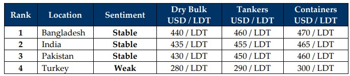

inWeekly Demolition Reports04/03/2025

As chaos continues to churn across all the world, the incredibly deceptive nature of ship recycling has once again reared its headthis week in the middle of amidst a dwindling of tonnage, where local port positions marked an impressive batch of arrivals of both tonnage and type at Indian and Bangladeshi waterfronts this week. The ongoing and noteworthy improvement in freight rates has sent charter levels climbing to their highest seen since early December whilst oil fell even further this week on the back of geopolitical tensions and compounding economic uncertainties, recording its first month of over month decline and wrapping up the week at USD 69.76/barrel.
As tonnage availability has been notably absent at the bidding tables of late, the industry was greeted by the start of the Holy Month of Ramadan this week, which descended across the Indian sub-continent (and Turkish) markets, providing India and Bangladesh some respite from the fiery January sales witnessed since the turn of the year, and all at a time where the recent decline in levels of about USD 30/LDT due to ongoing geopolitical volatility that has perpetuated itself via flatlining and even declining steel prices and ongoing currency depreciations that saw the U.S. Dollar surge against currencies of all ship recycling nations across the board this week.
At the respective ship recycling destinations, as currency and steel starts to hammer harder where ongoing Indian declines were joined by Pakistan for the first time since October 2024, further highlighting the unfolding effects of the tariff wars as news of 25% against Mexico and Canada going into effect on March 4th surfaced this week, including an additional 10% to be levied against China, which will maintain an unappreciable amount of pressure on ongoing vessel offerings. Political crises have once again resurrected themselves in Bangladesh as the law-and-order situation remains of concern there, whilst Pakistan’s treasury continues to hemorrhage cash as fundamentals here declined in unison this week. While India continues to take in questionable tonnage and recyclers here start to feel the pinch of a Rupee that’s gone AWOL, cash buyers are being greeted by Turkish offerings even below USD 280/Ton on units, all amidst a devasted Lira that remains clutching to life support.
Overall, with the Red Sea reopening and freight rates set to potentially cool once charters are set to refresh, ongoing peace talks for both Ukraine and Gaza continue to be hit with a bat as Norway cuts off fuel supplies to U.S. Naval vessels over Trump’s contentious meeting with President Zelenskyy and Israel cuts off all aid into Gaza amidst an unfolding ceasefire standoff that will unquestionably see freight dynamics start to shift once again. And this may lead to an increased supply of units / containers later in the year. Recent alarming news concerning a potential ban on Chinese built / owned tonnage calling U.S. ports also stands to devastate the U.S. economy in turn, eventually sending prices skyrocketing even further as U.S. inflation starts to rise once again and the Feds cancel their recently intended interest rate cut. Nevertheless, demand for units at flimsy levels remains firm across sub-continent markets and it will be interesting to see what levels upcoming sales are concluded at, especially as the supply of tonnage starts to slow once again.
For Week 9 of 2025, GMS Market Rankings / vessel indications are as below.

📄 Download PDF: Ship-recycling-market-insight-Week-09-02-28-2025.pdfSource: GMS,Inc.https://www.gmsinc.net/gms_new/index.php/web